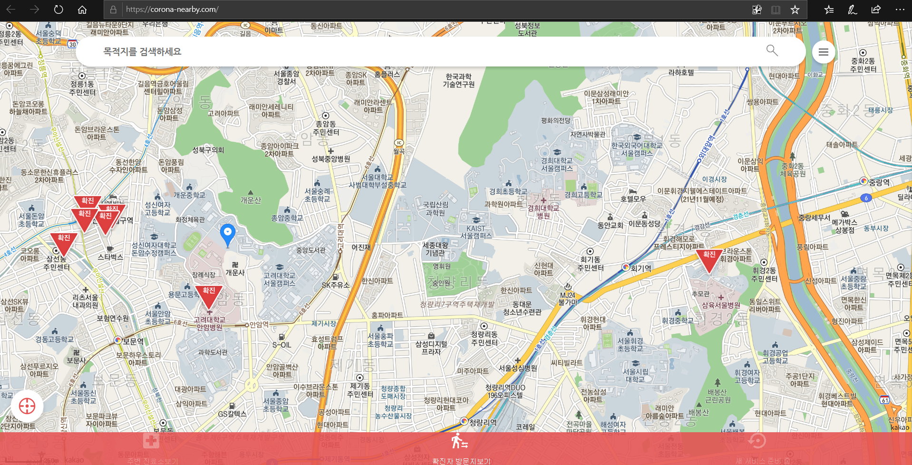

웹 개발로 코로나19 불안 해소한 대학생들... ‘코로나 지도’

신종 코로나바이러스 감염증 확진자들의 동선이 공개되면서 감염병 확산의 우려가 커지고 있다.
‘내 주변에 그들이 다녀간 곳’이 어디 인지가 관심사이지만 정부가 공개한 자료만으로는 파악에 한계가 존재하고, 정보의 파편화와 가짜뉴스 등으로 인해 혼란이 가중되기도 했다.
이를 보다 못한 대학생들이 나섰다. 신종 코로나바이러스 감염증 현 황을 한눈에 파악할 수 있는 디지털지도를 개발한 것이다. 그들은 고려대학교 ‘멋쟁이사자처럼’팀 출신의 김준태, 최주원, 이인우, 박지 환 학생들이다.
그들은 ‘코로나 알리미 사이트’를 개발했는데, ‘코로나 알리미 사이 트’란 위치 기반 서비스를 토대로 확진자들이 다녀간 장소를 알려주 고, 진료가 가능한 의료기관의 정보도 제공하는 사이트이다.
4명의 대학생들이 만들어낸 이 사이트는 소문을 타고 퍼져 각종 커 뮤니티 사이트에서 칭찬을 받고 있다. 이에 누리꾼들은 “우리나라 학생들 정말 유능하다”, “이런 사이트를 만들어줘서 고맙다”는 등의 반응을 보이고 있다.
개발자 중에 한 명인 최주원 학생은 ‘자신이 자주 가는 곳 근처에는 위험한 곳이 없는지’, ‘혹시 아프게 된다면 어떻게 해야 할지’ 등의 고민을 하다가 이 사이트 개발을 고안하게 되었다고 말했다.
그 제작 과정은 진료소를 찾기 위해 질병관리본부 홈페이지를 참고 하고 위도와 경도를 확인해서 지도에 위치를 표기한다. 그 후 전화번호와 주소를 확인한 뒤 입력하면 그 과정이 마무리된다.
이 사이 트를 개발하는 데 약 13시간 정도가 걸렸다고 하며, 학생들은 파편 화된 정보를 취합하는 과정에서 어려움을 느꼈다고 말했다.
‘코로나 알리미 사이트’는 방문자가 급증하면서 서버가 다운되는 현 상도 발생될 만큼 큰 주목을 받았다.
학생들은 모두가 불안에 혼란스러울 때 작은 도움이 되고 싶었다고 말했다. 학생들이 만든 선한 영향력으로 희망을 볼 수 있는 기회가 되었다.
코로나 알리미 사이트 바로가기(https://corona-nearby.com/)
HOVID-19 노승민 기자 (HOLSTON31005@covid.19)